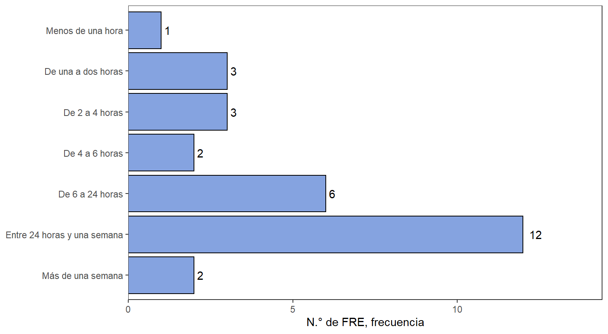
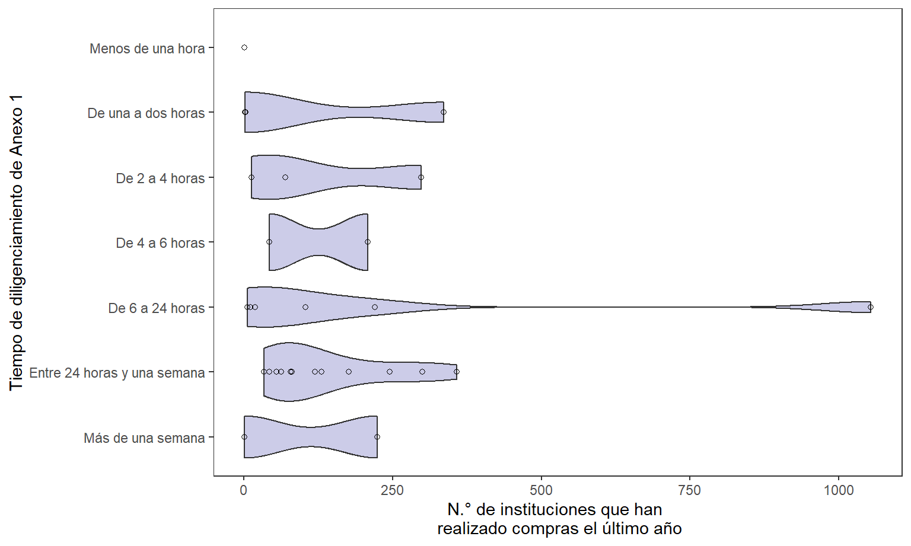
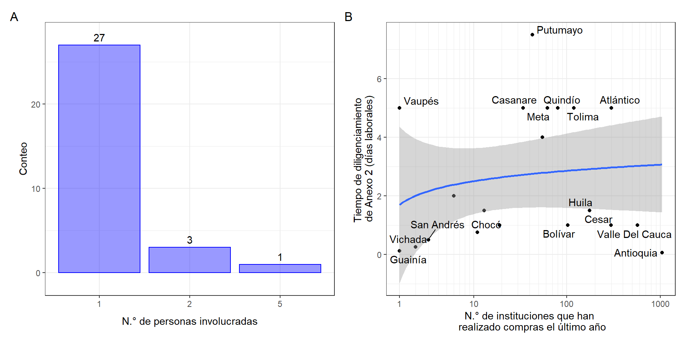
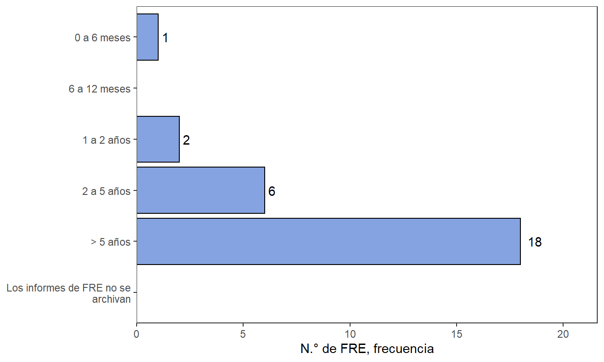
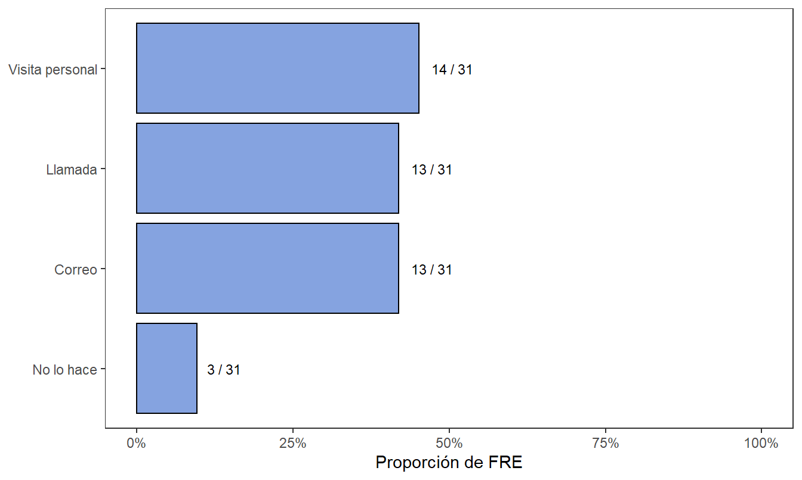
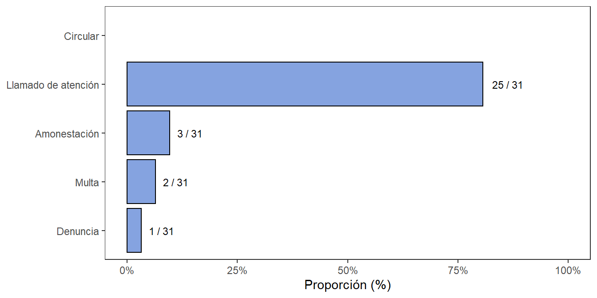

7 Reporte de informes
La Resolución 1479 de 2006 del Ministerio de Salud y la Protección Social4 por la cual se expiden normas para la creación y funcionamiento de los fondos rotatorios de estupefacientes en su artículo 5 expone que los FRE deben rendir informes al FNE. Entre estos informes se tienen4:
Informe mensual sobre la distribución de medicamentos monopolio del Estado, dentro de los diez (10) primeros días calendario de cada mes según el formato prescrito en el Anexo número 1 de la presente resolución.
Informe mensual sobre consumo de medicamentos monopolio del Estado, dentro de los diez (10) primeros días calendario de cada mes según el formato prescrito en el Anexo número 2 de la presente resolución.
Consolidado mensual sobre el Consumo de medicamentos franja violeta en su jurisdicción, dentro de los treinta (30) días calendario siguientes de recibir la información de los Establecimientos Farmacéuticos, IPS inscritos en su jurisdicción, diferenciando el consumo humano del veterinario, conforme al formato contenido en el Anexo número 2 de la presente resolución.
Novedades sobre la inscripción de los Establecimientos Farmacéuticos e IPS autorizados, de acuerdo al formato (Anexo número 3) de la presente resolución.
Consolidado semestral de las destrucciones de sustancias sometidas a fiscalización, medicamentos y/o productos que las contengan en su jurisdicción, dentro de los diez (10) primeros días calendarios de los meses de enero y julio.
Informe mensual consolidado sobre las transformaciones realizadas en el mes inmediatamente anterior, dentro de los diez (10) primeros días calendarios de cada mes. (Anexo número 4)
Informe trimestral de anomalías presentadas en su jurisdicción tales como, contrabando, decomiso e incautaciones de sustancias sometidas a fiscalización, aparición de medicamentos reportados como robados, distribución a establecimientos no autorizados, establecimientos que no rinden informes, y los demás que consideren necesarios para una efectiva labor de vigilancia, seguimiento y control.
Informe trimestral de sanciones impuestas por infracciones administrativas en la fabricación, distribución y dispensación de medicamentos de Control Especial.
Consolidado semestral del registro de Farmacodependientes de productos sometidos a fiscalización.
En la Figura 7.1 se tiene una descripción de la herramientas utilizadas el diligenciamiento del Anexo 1 de la Resolución 1479 de 2006 de MSPS. La mayoría de los FRE utilizan hojas de cálculo para el diligenciamiento del Anexo 1 (23 de 30 departamentos). Por lo menos tres departamentos utilizan modalidades de diligenciamiento manual y hojas de cálculo para el Anexo 1, mientras que sólo dos FRE sustentan la actividad mediante procedimientos manuales.
Algunos FRE como Antioquia, Bolívar, Córdoba, Cesar, Quindío y Valle del Cauca tienen plataformas desarrolladas dentro de la gobernación que son utilizadas para el diligenciamiento del Anexo 1.
Figura 7.1: Herramientas en el diligenciamiento del Anexo 1 de la Resolución 1479 de 2006

En la Figura 7.2 se tienen las medidas adoptadas como controles en la venta directa de MME a pacientes. La más común es la revisión exhaustiva del recetario (realizada por 22 de 30 FRE), seguido de la solicitud de identificación a los pacientes (realizada por 21 de 30 FRE). Existen otras medidas aplicadas como revisión de registro del prescriptor, revisión de historias clínicas y llamada al médico prescriptor. Por último, existen medidas menos poco frecuentes como visitas domiciliarias, llamadas al servicio farmacéutico, llamada al paciente o posposición de la entrega. Se tienen algunos FRE que no realizan controles, debido a que no realizan dispensación a los pacientes como Quindío, Valle del Cauca, Putumayo, Nariño o Risaralda.
Figura 7.2: Controles en las ventas directas a pacientes
Figura 7.3: Tiempo en la consolidación del Anexo 1 de la Resolución 1479 de 2006
Figura 7.4: Tiempo en la consolidación del Anexo 1 de la Resolución 1479 de 2006 vs N° de instituciones que realizan compra en un año
Figura 7.5: Tiempo en la consolidación del Anexo 2 de la Resolución 1479 de 2006
Figura 7.6: Medio para consolidación de Anexo 13 de la Resolución 1478 de 2006

Figura 7.7: Tiempo de archivo de Anexo 13 de la Resolución 1478 de 2006
Figura 7.8: Mecanismo de seguimiento de instituciones de envío de informes
Figura 7.9: Medidas por incumplimiento de envío de informes
